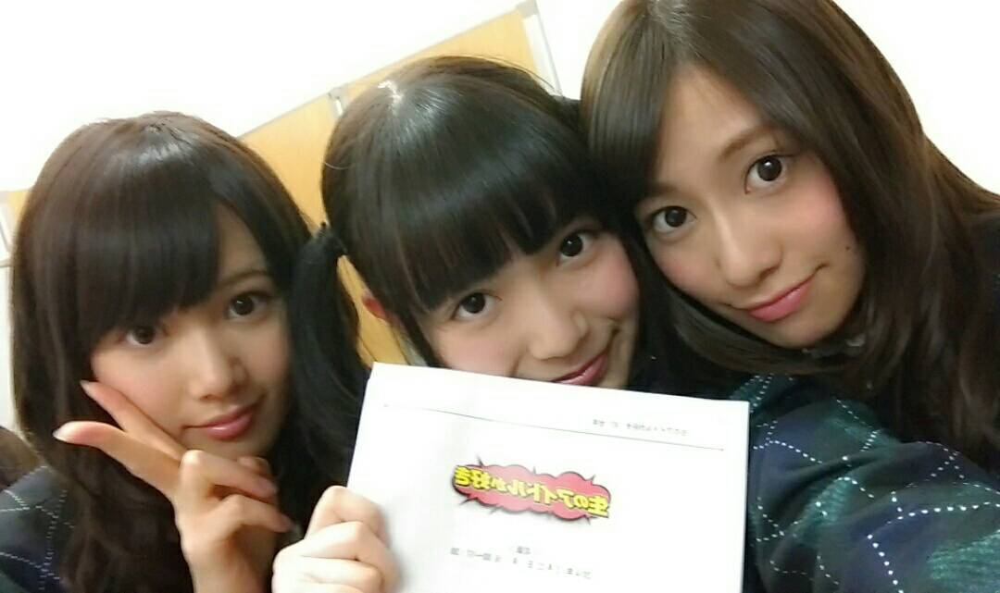
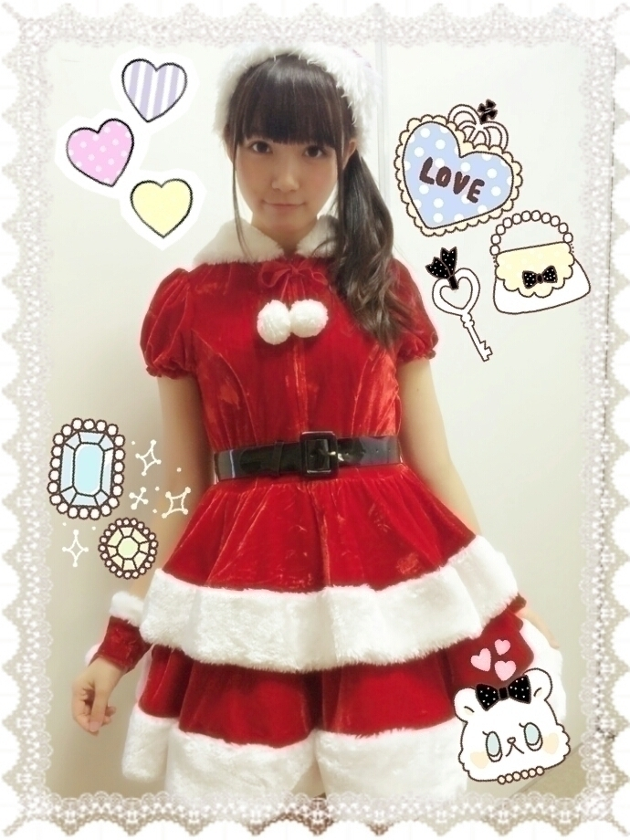

| 2014/12 24 Wed | ひめたん-OoO-その507 |

昨日は
「生のアイドルが好き」
公開生放送に参加しました！
待ちに待った生ドル。
ひめたんは初登場だったのですが
ゆるゆる～でステキな番組( ˇωˇ )
スタッフさんも
何してもおっけーだよーなんて
言ってくださって
とってもあたたかい現場でした♡
MCのまっちゅん、かなりんと5人で
のんびりほんわかトーク
お届けできたんじゃないでしょうか～＊
生放送みてくださった方、
スタジオまで遊びに来てくれた方、
街頭ビジョンみてくれた方
ありがとうございました\( ˆoˆ )/
一昨日は
MUSIC FOR ALL,ALL FOR ONE 2014
に出演させていただきました。
乃木坂を初めてみる方々も
一緒に盛り上がってくださって
本当に嬉しかった！
そして乃木坂ファミリーのみなさんも
たくさん遊びに来てくださって
心強かったです～
アンダー曲も披露させていただけて
何だか感無量( ´•̥ω•̥` )
豪華な共演者の方々と一緒に
私たち乃木坂46も呼んでいただいて
幸せな時間でした。
乃木坂としては今回で3回目\＊/
初めて出演した時よりも
パワーアップしてるかな～
そして今日は
名古屋個別握手会でした！

サンタさん(＊´v`＊)
これねースカートねー
写メで見るよりもフリフリなの
遊びに来てくれたみなさんありがとう♡
メンバーもファンのみなさんも
サンタさんの格好したひと多くて
今日楽しかったなあ～
アンダーライブ・クリスマスショーの
感想をたくさん聞かせてくれたね！
会場に来てくれたひとも
スカパー生中継観てくれたひとも
ありがとう♪
ほかにはのぎ天とか、乃木どことか
アニメとかスクフェスとか
いつも楽しいお話たくさん！
いつも来てくれるひとも
はじめましてのひとも
寒いなか会いに来てくれて
今日は本当にありがとうね(´-ω-`)♡
よいお年をのひとも
また京都で！感謝祭で！のひとも
いたけれど、みなさん
よいクリスマスを......。
＼ 新衣装お気に入り♡ ／

ここで告知させてくだいね
15日 EX大衆
19日 GiRLPOP 2015 WINTER
発売中です\( ˆoˆ )/
EX大衆さんは
すだれ姉妹のみりりんと2人！
2期生さんとのペア取材は
初めてなので
みりりんで嬉しい♡♡
今年の下半期について
2人で振り返ってみたり
来年のこととかお話してます～
GiRLPOPさんは
選抜メンバーが表紙、
アンダー・研究生が裏表紙！
自由な感じで写真撮っていただいたり
インタビューもありますよ( ^o^ )
乃木坂ちゃんたくさんいて
必見ですよ～
よろしくお願いします☆
最後に、乃木のので募集してた
「汗かき選抜」の結果
2位に選んでいただきました！
私は本編でも言ったけど
汗キャラになるのは不本意だ！
入れないでねみんなーは
フリじゃないよ！
みんな何なのドSなの(｀・ω・´)
でも乃木のの大好きだからいいや♡

 ひめかチョコミント好き？？
ひめかチョコミント好き？？
今年の夏くらいにあすかりんが
チョコミントアイス食べてて
それきっかけで好きになった♡
格差社会コンビだいすき。
ふたりでいつもなに聞いとるのー？♡
音楽の話だよね～
このときは何だったっけなあ
まずヘッドホン共有も高度な技だし
なかなかしないけどね( ˇωˇ )
お手紙と一緒に私のお気に入りのリボン
プレゼントしたらつけてくれるかな？
勝手におそろいにしてつけたーい笑
もちろん♡♡
おそろっちしよ？
楽しみにしてるね( ^o^ )りぼん女子
ひめたんは、落ち込んだとき
どのようにして切り替えてるの？
寝る！誰かに話す！
あんまり溜め込んじゃだめだよー
ひめ話聞くよ？？
ひめたんの日記の
コメント欄下２ケタに46を踏んだ方へ
手書きでコメ返するコーナー
＼ ひめたん46 ／

いつもたくさんのコメント
ありがとうございます
今年のクリスマスみんなは何するの？
ひめはお仕事してるよ～
イブはあるメンバーとあるところへ......♡
きゃー楽しみ(＊´ω`＊)
(＊´・ω・＊)
コメント(866)
2014/12/24 00:00